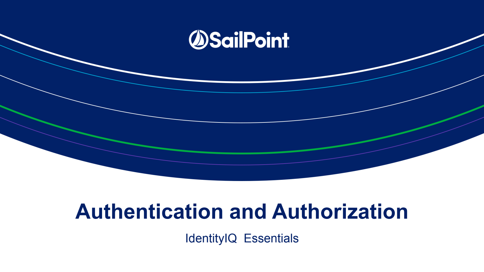
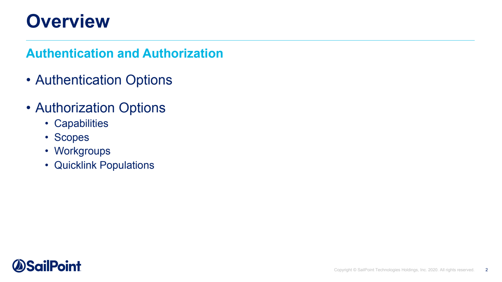
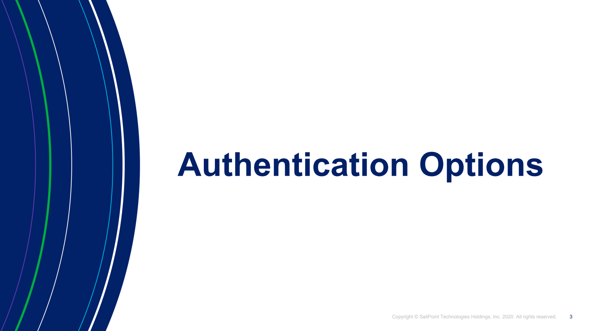
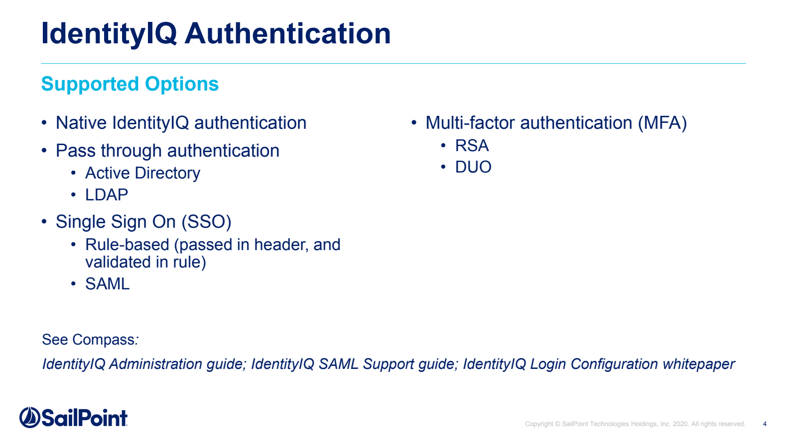
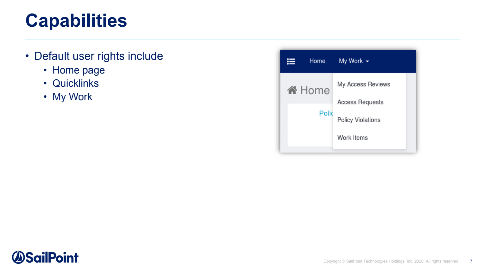
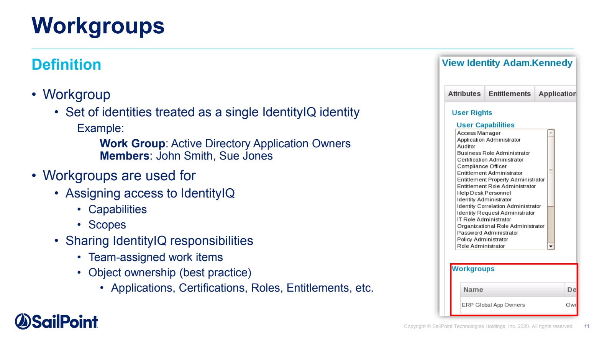

All Essentials modules · Practice companion
9. Authentication and Authorization
Proving identity versus granting rights
Authentication establishes who is signing in. The course lists native IdentityIQ authentication, directory pass-through, SSO mechanisms and MFA integrations available in its version. These slides are historical training material, not a current support matrix or a recommendation to select any particular legacy provider.




Authorization determines what an authenticated identity can do and see. Capabilities add functional rights and control available operations and menus. Scopes, when configured, divide the managed data into logical areas and restrict which objects a person can see or act upon. The regional illustration shows that permission to use a feature and permission to see a particular region's objects are distinct.





Share responsibility through workgroups
A workgroup is a set of identities treated as a shared IdentityIQ identity for appropriate operations. It can own applications, roles, certifications or entitlements; receive shared work items; and convey capabilities and scopes to members. An Active Directory owner workgroup avoids making a single person's account the only operational owner.
Do not confuse a workgroup with an account group on a target application, a saved population or an attribute-generated group. Their names may sound similar, but their operational purposes differ.



Exercise 1.6 configures LDAP pass-through and the account attributes used for login, then tests the intended sign-in path in the training VM. Its additional password-reset exercise enables the feature, configures challenge answers and tests the resulting flow. These are recorded study steps; no authentication settings or user credentials were changed while creating this book.
Related practice and source pages
Exercise 1.4 — Organize Identities · Exercise 1.6 — Enable Pass-Through Authentication